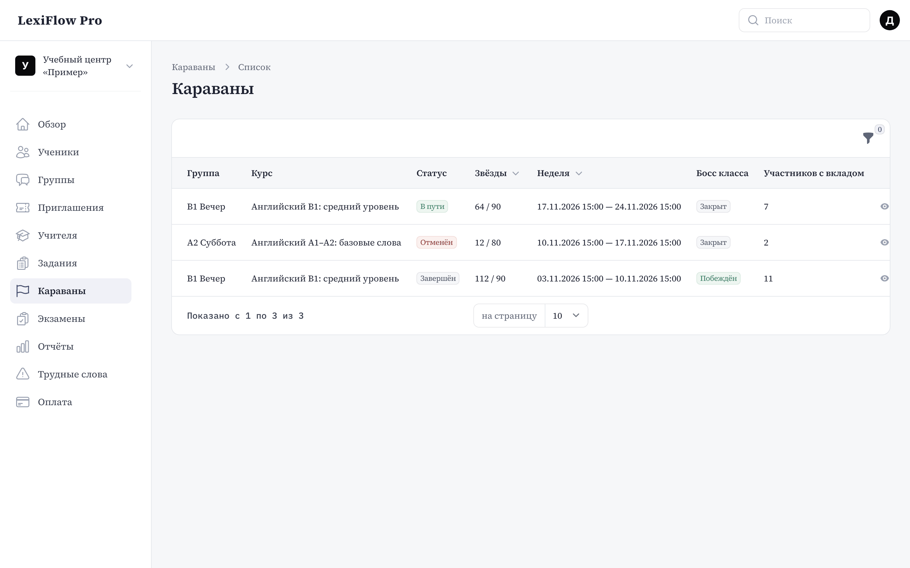
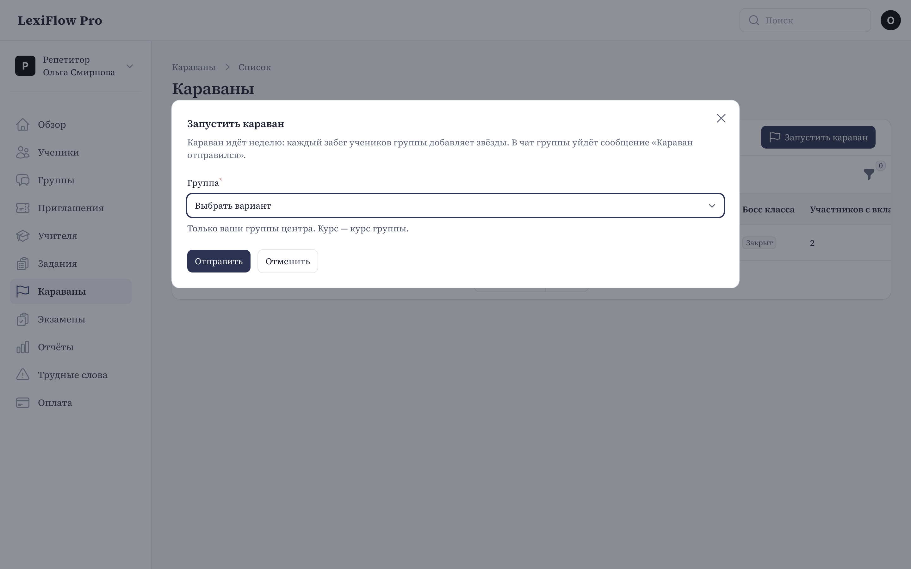
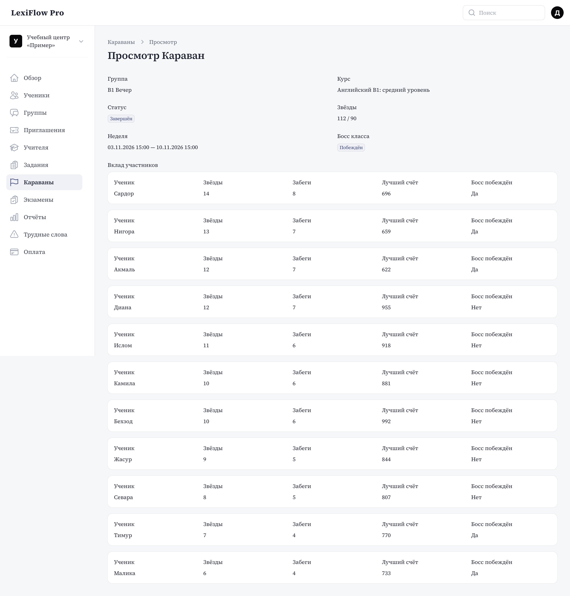
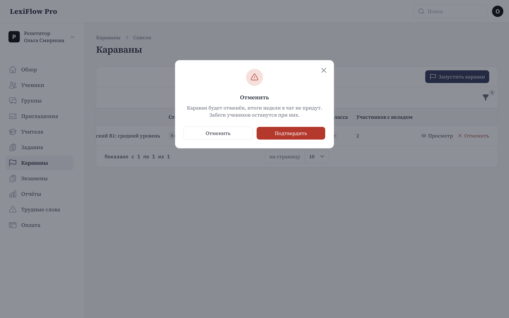

«Караван класса» — недельная командная игра группы. Каждый забег ученика в игре «Караван» добавляет звёзды в общую полосу. Когда цель недели набрана, открывается «Босс класса»; каждый участник проходит его один раз. Через 7 дней бот публикует в группе итоги.
Кто имеет доступ: владелец видит караваны всех групп центра, учитель — своих групп. Запустить и отменить караван может только учитель, назначенный в этой группе; владелец — только в группах, где он сам назначен учителем. Раздел есть, пока платформа держит игру включённой.

/start_caravan, — с кнопкой, которая открывает экран каравана в мини-приложении.
| Ответ кабинета | Что делать |
|---|---|
| Запускать и отменять караван может только учитель этой группы | назначьте себя учителем группы (глава «Учителя») |
| Группа не активирована — караван запустить нельзя | дождитесь активации группы |
| Караван класса — для центров: у центра должна быть действующая подписка | продлите тариф (глава «Оплата») |
| Караван этой группы уже в пути | в группе одновременно идёт один караван |
| Сообщение не дошло до чата, поэтому караван не запущен | проверьте, что бот в группе и может писать, и повторите |
«Просмотр» открывает карточку каравана с таблицей «Вклад участников»: звёзды, забеги, лучший счёт, побеждён ли босс. Ученики показаны только по имени.

